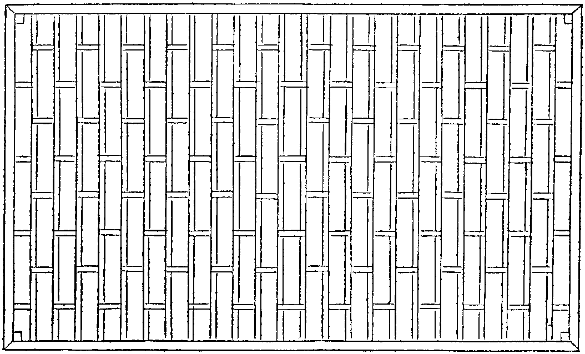
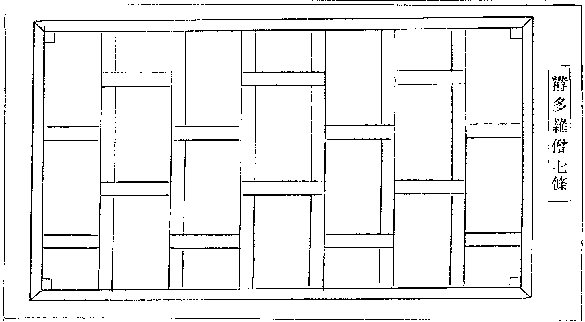
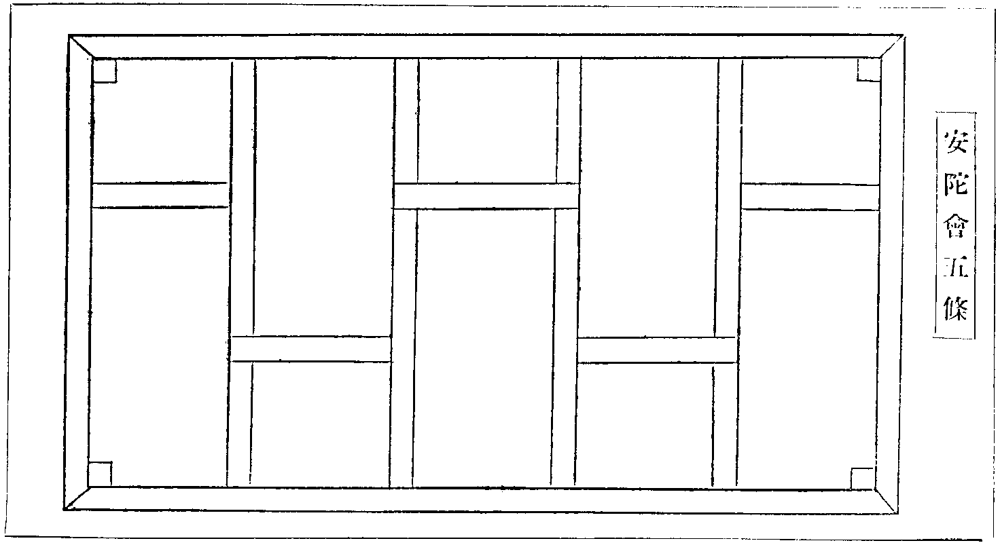

大正新脩大藏經 第45冊
No.1900 佛制比丘六物圖 (1卷)
【唐 元照撰】
第 1 卷
No. 1900
佛制比丘六物圖
初明三衣為三物
(此衣九品且示)僧伽梨大衣(上品餘準減作)

欝多羅僧七條

安陀會五條

比見樂學戒者。欲置法服。不知所裁。既昧律儀。多承妄習。然其制度。遍在諸文。故撮其大要。兼所見聞。還宗舊章。且分十位。援引正教。庶令事有準承。指斥非濫。所謂不看他面。
初制意。鈔云。何名為制。謂三衣六物。佛制令畜。通諸一化。竝制服用。有違結罪。薩婆多云。欲現未曾有法。故一切九十六道無此三名。為異外道故。四分云三世如來。竝著如是衣。僧祇云。三衣是賢聖沙門標識(音志)雜含云。修四無量。服三法衣。是則慈悲者之服。十誦云。以刀截故。知是慚愧人衣。華嚴云。著袈裟者。捨離三毒。四分云。懷抱於結使。不應披袈裟。賢愚經云。著袈裟者。當於生死。疾得解脫。章服儀云。括其大歸。莫非截苦海之舟航。夷生涯之梯隥也。所以須三者。分別功德論云。為三時故。冬則著重。夏則著輕。春則服中。智度論云。佛弟子住中道故。著三衣。外道裸形無恥(住斷見故)白衣多貪重著(住常見故)多論云。一衣不能障寒。三衣能障等。戒壇經云。三衣斷三毒也。五條下衣。斷貪身也。七條中衣。斷嗔口也。大衣上衣斷癡心也(世傳。七條。偏衫。裙子。為三衣者謬矣)天台智者制法第一條云。三衣六物道具具足。若衣物有闕。則不同止。清涼國師十誓第一云。但三衣一鉢。不畜餘長。歷觀經論。遍覽僧史。乃知聖賢踵跡。華竺同風。今則偏競學宗。強分彼此。且削髮既無殊態。染衣何苦分宗。負識高流。一為詳鑑。況大小乘教。竝廣明袈裟功德。願信教佛子。依而奉行
二釋名
有二。初通名者。總括經律。或名袈裟(從染色為名)。或名道服或名出世服。或名法衣。或名離塵服。或名消瘦服(損煩惱故)。或名蓮華服(離染著故)。或名間色服(三色成故)。或名慈悲衣。或名福田衣。或名臥具。亦云敷具(皆謂相同被褥)。次別名者。一梵云僧伽梨。此云雜碎衣(條相多故)。從用則名入王宮聚落衣(乞食說法時時著)。二欝多羅僧。名中價衣(謂財直當二衣之間)。從用名入眾衣(禮誦齋講時著)。三安陀會名下衣(最居下故或下著故)。從用名院內道行雜作衣(入聚隨眾則不得著)。若從相者。即五條。七條。九條。乃至二十五條等。義翻多別且提一二。
三明求財
分二。初明求乞離過。由是法衣。體須清淨。西梵高僧。多捨糞掃衣。今欲如法。但離邪求。事鈔云。興利販易得者不成。律云不以邪命得(下引疏釋)激發得(說彼所得發此令施)現相得(詐現乏少欲他憐愍)犯捨墮衣(三十諸衣戒等)竝不得作業疏云。邪命者。言略事含。大而言之。但以邪心。有涉貪染。為利賣法。禮佛。誦經。斷食。諸業所獲贜賄。皆名邪命。今人囊積盈餘。強從他乞。巧言諂附。餉遺污家。凡此等類竝號邪利。次明對貿離過。若本淨財貿得最善。必有犯長錢寶。將貿衣財準律。犯捨衣貿得新衣。但悔先罪。衣體無染。可以例通。若自貿物。不得與白衣爭價高下同市道法。遣淨人者。亦無所損。有云。淨財手觸。即為不淨。此非律制。人妄傳耳(但犯捉寶非污財體)。
四明財體
分二。初明如法。律中猶通絹布二物。若準業疏諸文。絹亦不許。疏云世多用絹紬者。以體由害命。亦通制約。今五天竺及諸胡僧。俱無用絹作袈裟者。又云。以衣為梵服。行四無量。審知行殺。而故服之。義不應也。感通傳中。天人讚云。自佛法東傳。六七百年。南北律師。曾無此意。安用殺生之財。而為慈悲之服。廣如章服儀明之。義淨寄歸傳。輒責為非。蓋大慈深行。非彼所知。固其宜矣。次簡非法。然其衣體。須求厚密。離諸華綺。律云。若細薄生疎(蕉葛生紵並不可用)綾羅錦綺。紗縠紬綃等。並非法物。今多不信佛語。貪服此等諸衣。智論云。如來著麁布僧伽梨。此方南嶽山眾。及自古有道高僧。布衲艾絮。不雜一絲。天台唯被一衲。南山繒纊不兼。荊溪大布而衣。永嘉衣不蠶口。豈非慈惻之深。真可尚也。今時縱怠。加復無知。反以如來正制之衣。用為孝服。且僧無服制。何得妄行。釋氏要覽。輔教孝論。相循訛說。慎勿憑之。近見白布為頭絰者。斯又可怪。法滅之相。代漸多。有識者。宜為革之。則法得少留矣。
五明色相
律云。上色染衣。不得服。當壞作袈裟色(此云不正色染)亦名壞色。即戒本中三種染壞。皆如法也一者青色(僧祇。謂銅青也。今時尼眾青褐。頗得相近)。二者黑色(謂緇泥涅者。今時禪眾深黲竝深蒼褐。皆同黑色)。三木蘭色(謂西蜀木蘭。皮可染作赤黑色古晉高。僧多服此衣。今時海黃染絹微。有相涉。北地淺黃。定是非法)。然此三色名濫體別。須離俗中五方正色(謂青黃赤白黑)。及五間色(謂緋紅紫綠碧。或云磂黃)。此等皆非道相。佛竝制斷。業疏云。法衣順道。錦色斑綺。耀動心神。青黃五綵。真紫上色。流俗所貪。故齊削也。末世學律。特反聖言。冬服綾羅。夏資紗縠。亂朱之色。不厭鮮華。非法之量。長垂髀膝。況復自樂色衣妄稱王制。雖云飾過。深成謗法。祖師所謂何慮無惡道分悲夫(多論違王教得吉者。謂犯國禁令耳)。
六明衣量
有二。初準通文。不定尺寸。律云。度身而衣。取足而已。五分肘量不定。佛令隨身分量。不必依肘。今時衣長。一丈二三。言取通文者。無乃太通乎。又言此是度身者。其身甚小。而衣甚長無乃度之。不細乎。然度身之法人多不曉。業疏云。先以衣財。從肩下地。踝上四指。以為衣身。餘分葉相。足可相稱。次明局量。鈔引通文已續云。雖爾亦須楷準。故十誦僧祇。各有三品之量。今準薩婆多中三衣。長五肘。廣三肘(每肘一尺八寸。準姬周尺長九尺。廣五尺四寸也)若極大者。長六肘廣三肘半(長一丈八寸。廣六尺三寸。有人局執極量。既分三品。何得局一。借令依此。亦不至丈二思之)若極小者。長四肘。廣二肘半(長七尺二廣四尺五)若過量外。態說淨。不者犯捨墮。四分云。安陀會。長四肘。廣二肘(長七尺二。廣三尺六)欝多羅僧。長五肘。廣三肘。僧伽梨亦然(長九尺。廣五尺四寸)上引佛言示量。下引祖教顯非。章服儀云。減量而作。同儉約之儀。過限妄增。有成犯之法。文云。四肘二肘。不為非法。與佛等量。便結正篇。即其證也。又云。頃載下流驕奢其度。至論儉狹。未見其人。又云。衣服立量減開過制者。俱抑貪競之情也(好大者請詳此諸文)。鈔文佛衣戒云。佛身倍人。佛長丈六。人則八尺。佛衣長。姬周尺丈八廣丈二。常人九尺六尺也(有執極量者 謂佛衣倍人六肘則二丈一尺六寸。蓋未讀此文故也)然佛世之人。身多偉大。準前為量。足覆形軀。今時劫減。人身至大。不過六尺。而衣長丈二。往往過之。及論廣量。不至五尺前垂拕膝。步步吉羅。可謂顛之倒。之於斯見矣。故業疏云。前垂一角。為象鼻相。人不思罪。習久謂法。何必如許煩惱我執。無始常習。可是聖法耶。聞義即改。從諫若流斯上人也(疏文)慈訓若此那不思之。
七明條數多少
下衣五條一長一短。中衣七條兩長一短。大衣三品。下品有三。九條十一條十三條。並兩長一短。中品三者。十五十七十九條並三長一短。上品三者。二十一二十三二十五條。並四長一短。鈔云。準此為大準隨力辨之(九品中。隨財體多少。得一受持)羯磨疏云。所以極至二十五者。欲為二十五有作福田故。所以唯隻非雙者。沙門仁育同世陽化。故非偶數。所以長短者。如世稻畦隨水處高下別也。又為利諸有。表聖增而凡減。喻長多而短少也。今時禪門多著九條。或三長四長隨意而作。此非法也。疏云。長短差違乖慈梵。故隨步越儀。一一結罪。矧又色帶長垂。花排細刺山水毳衲。損業廢功。真誠學道不捨寸陰。自非無所用心。何暇專功於此。次明條葉之相。僧祇律中。廣應四指(四寸)挾如[麩-夫+廣]麥。疏云。今多廣作澆風扇也。章服儀云。此見條葉。不附正儀。三寸四寸任情開闊。浸以成俗。彌開華蕩之源等。又刺綴條葉。須開下邊。章服儀云。裁縫見葉表其割相。今並縫合無相可分。鈔云。刺一邊開一邊。若兩邊俱縫者。但同縵衣。世中相傳。號曰明孔。又言明相(律中天曉謂之明相)又云漏塵等。俱是訛謬。
八明重數
律云。不得細薄。大衣新者二重。餘二衣並一重。十誦中大衣故者四重。餘二衣並二重薩婆多中。大衣三重。一重新二重故。次明重法。然重複之相。諸出不同。若準多論重縫三衣。有緣摘分持行。據此但是。全衣合綴。祖師所著。亦不殊此。至感通傳天人方示別製。人多疑之今為具引。彼云大衣重作。師比行之。然於葉下。乃三重也。豈得然耶。即問其所作。便執余衣。以示之。此葉相者。表稻田之塍疆也。以割截衣段。就裏刺之。去葉[麩-夫+廣]麥許。此則條內表田葉上表渠相。豈不然耶。今則通以布縵。一非割截。二又多重。既非本制。非無著著之失(已上傳文。然多論異此者。但是聞見不等。然天人示法。並謂親承佛世。此方教文不決之事。如諸經律。座具著肩。唯此傳文。令安左臂。又如後引增座具法。今皆準用。何獨疑此。況非割多重二難。理自顯然)三明成不業疏云。下二隨時。若是大衣。必須重複。今多單作是非法服。得行受持。服用得罪。
九明作衣法
三衣並須割截。財少難辨。則聽揲葉。五條一種。復開襵葉。四分中。大衣五日不成。尼提僧吉(準鼻柰耶。七條四日。五條二日)十誦。須却刺。不得直縫。前去緣四指施[革*玄](音絃鉤也)後去緣八指施紐。今時垂臂。前八後四。俱顛倒也。又安鈎約處揲以方物。本在助牢。而目云壇子非也。三千威儀云。四角安揲。四分云挽令角正等。世云四天王者亦非也。四分。肩上須揲障垢膩處。次明正從者。大衣九品本須割截。衣財不足。則開揲葉。二九則成十八種。衣猶不足者。聽七條為從衣。如是次第。開至縵衣。(言縵者無條相故)三衣正從各有二十四種。大衣正有十八種(割揲名九)。從則有六(二七條。三五條。一縵衣)。七條正衣有二(割揲二也)。從有二十二(大衣十八。五條三縵衣一也)。五條正衣有三(割揲襵也)。從有二十一(大衣十八。七條二。縵衣一)。總計七十二品。縵通三用。然本是沙彌衣。律制沙彌。著二縵衣。一當七條入眾。一當五條作務(衣相未正。故但云當當。字去呼)今時剃髮。即著五條。僣濫大僧。深乖本制。師長有識請依聖教。及至受戒。多無衣鉢。律令師辨。誰復依行。但至臨時。從人借受瓦盆油鉢陳朽大衣。沙彌不識是非。闍梨何曾檢校。律云。若無若借。不名受具。豈得惜少許資財。令一生無戒。虛食信施。沈流萬劫。實可悲痛。雖往者不可諫。而來者猶可追。
十加法行護
初加法者。必從次第。先加五條。(準十誦文)大德一心念。我比丘某甲。此安陀會五條衣。受一長一短。割截衣。持(三說。揲葉襵葉隨改)中衣則云。此欝多羅七條衣受。兩長一短割截衣持。大衣則云。此僧伽梨。二十五條衣受。四長一短。割截衣持。餘詞同上。次明捨法(準僧祇文)大德一心念我某甲。此安陀會是我三衣數。先受持。今捨(一說。餘二準改。並須求明律者。對首作之)。次明行護。十誦。護三衣如自皮。鉢如眼目。著大衣不得摙木石土草。掃地等種種作務。不應為之。決正二部律論。著大衣入村。見師僧上座別人。不得禮(得禮佛及眾僧)十誦。所行之處。與衣鉢俱。無所顧戀。猶如飛鳥。若不持三衣。入聚落犯罪。僧祇云。當如塔想。祖師云。諸部竝制隨身。今時但護宿者。不應教矣(於此須明攝護。略分四門)。初明衣界律云。若人。衣。異處越宿。得捨墮罪。此衣須捨懺(言墮罪者。墮眾合地獄。一晝夜當人間歲數十四億四十千歲)。律明離護。竝約界論。界有多別。大略分二。一者作法攝衣界(謂伽藍中結界。寬於院相。須加攝衣羯磨。結已除無村聚。通界護衣)。二者自然護衣界。本宗他部。總有十五種。僧伽藍界一(謂垣牆籬棚。四面周匝。雖結界處。望不結攝衣。亦號自然衣界)。村界二(男女所居名村。即俗舍也。四相同上。準舍界中。更有六種別相)。一者聚落界(謂村邑分齊處也。一者別界。如一聚落。止有一家。齊聚落外雞飛及處。已外名異界。二同界者。謂多聚相涉。多論。四聚中間車梯四向相及。衣在四聚不失。僧祇臥四聚中。頭足兩手。各在一界。衣在頭底。天明頭離犯捨。手脚相及不犯。多論安衣二界中。身臥二界上不失。各有身分故)。二者家界(謂一聚內有多家者。亦有同別。若父母兄弟同處同業名同界。異食異業。名別界即下族界也)。三者族界(謂一家中異食異業。亦有同別。各有住處。則名一界。若在二處及。作食便利等眾處皆失)。四外道舍(若同見同論。則同一界。若異見者。身衣二處。及在門屋中。庭眾處竝失)。五遊行營處(諸戲笑等人暫止之處。若屬一主名同界異主則彼此眾處等皆失)。六重舍(即多重樓閣等。同主則人衣互上下不失。異主則失。若單樓閣 僧祇梯隥道外二十五肘。了論。衣在下身在上者失。反此不失)。樹界三(極小下至與人身等。足蔭加趺。此有五別)。一獨樹(取日正中影覆處。雨時水不及處)。二相連大林(十誦一拘盧舍。即二里六百步)。三四樹小林(善見。十四肘。計二丈五尺二寸)。四藤蔓架(浦萄瓜瓠等。僧祇四面各取二十五肘。計四丈五尺。謂從人身已去。非架外也)。五明上下(衣在樹下。身在上失衣。若衣在上身在下不失。有落義故)。場界四(村外空靜治五穀處。隨場廣狹為限)。車界五(住車取迴轉處。行車前後車杖相及不失。不及則失)。船界六(住船取迴轉處。行船多有住處。不通來往。則有別界。反此通護)。舍界七(謂村外空野別舍。四分無相若準僧祇樓閣。則取二十五肘。若準四分庫藏。則取四周內地。兩相隨用)。堂界八(前多敞露)。庫界九(積藏眾物)。倉界十(儲積穀米處。上三竝約內地為界)。蘭若界十一(即空逈處。八樹中間。計五十八步四尺八寸)道行界十二(善見前後四十九尋內。計三十九丈二尺)。洲界十三(善見十四肘內。計二丈五尺二寸)。水界十四(僧祇水中道行二十五肘。計四丈五尺。若衣在船上入水即失。若衣在岸上。兩脚入水即失。一脚不失)。井界十五(僧祇道行露地井邊宿。二十五肘。亦四丈五尺內為界。衣在井中。應繩連垂手入井不失。與上界別故。餘坑窨亦然)。二明勢分者。作法衣界則無。必須入界。方乃會衣(勢分是自然。與作法界體異故)。十五種自然。並隨界量外。例加一十三步。計七丈八尺(善見不健不羸人 盡力擲石落處。古德評之約一十三步為準)。但入勢分。即成會衣。不必入界(若有染隔情三礙在界 即無勢分)。三明四礙(如上諸界隨有失衣)。一者染礙(女人在界。恐染淨行。衣須隨身)。二者隔礙(水陸道斷。門牆阻障等)。三者情礙(國王大臣。幻師。樂人。入界。奪失等想及人家兄弟分隔。各有分齊之處)。四者界礙(彼此不相通。如身在道中。衣者在樹下。即失衣等)。四者明失否之相。律鈔。有三斷。一者律中。奪失燒漂壞五想(即情礙也)水陸道斷。若賊惡獸命梵等難(此是隔礙)必有上緣。但失愛法。不犯捨墮。二者若先慢不護。後雖難緣。失法犯罪。三者若恒懷領受。諸難忽生往會不及。亦不失法。亦無有罪(事須真實。不可倚濫)。又問曰。忘不持衣外行。至夜方覺取會無緣。失衣以否。答。彼人恒自將隨身。忽忘例同長衣開之(長衣忘不說淨不犯更開十日)。三明著法。律令齊整著三衣。三千威儀。著時不得向佛塔上座三師。亦莫背不得口銜。及兩手奮。鼻柰耶。應挑著肩上。不得垂臂肘。此是前制。感通傳。天人所告。凡經四制。初度五人已來。竝制袈裟左臂。座具在袈裟下。次為年少美貌。入城乞食。多為女愛。遂制衣角在左肩。以坐具鎮之。復次因比丘。為外道難云。豈得以所座之布。而居法衣之上。從此還制。令著左臂座具在下。最後因比丘著衣不齊整。外道譏云。如婬女如象鼻。由此始制。上安鉤紐。令以衣角達于左臂置於腋下。不得令垂如上過也。今則宜從後制。不然搭於肩上。若垂肘臂。定是非法。以眾學中制罪故也。四明補浣。十誦衣服。常須淨潔如法。不爾則人非人訶。善見。大衣。七條。廣邊八指。長邊一搩手內穿不失受。五條廣邊四指。長邊一搩手內穿不失。餘處穿如小指甲許失受。補竟受持。多論但使緣斷則失受。善見袈裟若大減却。若小以物裨之。若浣若增色。若脫色上色。皆不失受等云云。
鉢多羅第四物
初明制意。僧祇鉢是出家人器。非俗人所室。十誦云。鉢是恒沙諸佛標誌。不得惡用。善見云。三乘聖人。皆執瓦鉢。乞食資生四海為家。故名比丘。古德云。鉢盂無底。非廊廟之器二釋名者。梵云鉢多羅。此名應器。有云。體色量三。皆應法故。若準章服儀云。堪受供者。用之名應器。故知鉢是梵言。此方語簡。省下二字。三明體者。律云。大要有二。泥及鐵也。五分律中。用木鉢犯偷蘭罪。僧祇云。是外道標故。又受垢膩。故祖師云。今世中。有夾紵漆油等鉢。竝是非法。義須毀之。四明色者。四分應熏作黑色赤色。僧祇熏作孔雀咽色鴿色者如法。善見鐵鉢五熏土鉢二熏。律中聽作熏鉢鑪等(此間多用竹烟。色則易上)五明量者。四分中。大鉢受三斗(姬周三斗。即今唐斗一斗)。小者受斗半(即今五升)。中品可知(大小之間。有執律文量腹之語。不依斗量非也。鈔云既號非法。不合愛淨)。六明加法(準十誦文)大德一心念。我某甲此鉢多羅應量受常用故(三說捨法。應云先受持今捨一說)七行護五百問云。一日都不用鉢食犯墮(本宗應吉)重病者開。若出界經宿。不失受(但得吉罪)善見。若穿如粟米大失受。若以銕屑補塞已。更須受。若偏斜破不成受。
尼師壇第五物
初制意四分中。為護身護衣。護僧臥具故。二釋名。梵云尼師壇。此云隨座衣。亦云座具。如此方隥褥之類。愚者迷名云因尼師故制。又不識中間貼故。呼為壇子。因合召為尼師壇者。取笑於時不學故也。三定量四分。長佛二搩手(準五分佛一搩手。周尺二尺則長四尺也。量時尺寸。須定。微出量外。律結正犯)廣一搩手半(即三尺也)。上是本制量。律云。時迦留陀夷。身大尼師壇小。對佛說之便聽更增廣長各半搩手(各增一尺)。此是後聽。戒疏云。更增者開緣也。還從本制。限外別增(有執增量。為制非也)又云即世為言。衣服座具。皆樂廣大。食飲受用並樂華厚(云云)。然捨制從開。理雖通得。但迦留極大止加半搩。今時卑陋。豈是初量不容耶。苟曰不然。請以誠證。鈔云。如法作者。準初量已。截斷施緣。若座時膝在地上者。依增量一頭一邊接裨之。此是定教正文(故知膝不出地。亦不在增。或言初量是廢前教非也)然前代但於長頭廣邊。各增一尺。後天人告祖師云。縱使四周具貼。不違半搩之文。但翻譯語略云各半搩耳。十字而論即是四周之義。坐具四貼由此始矣。四製造法。色同袈裟。十誦。新者二重。故者四重。不得單作。鼻奈耶云。應安緣。五分須揲四角。四分作新者。須以故物。縱廣一搩手揲之(亦准佛一搩。方二尺也。不揲入手犯捨墮罪。若得已成新者。並財體一經身用。則不須揲)又不得不截通取增量。此跋闍妄法。五加法云。大德一心念。我某甲此尼師壇應量作。今受持(三說。捨法改下句。云今捨一說)十誦離宿。吉羅亦不失法。行用大同鉢耳。(寄此略辨祇支覆肩二衣)初制意者。尼女報弱。故制祇支。披於左肩。以襯袈裟。又制覆肩。掩於右膊。用遮形醜。是故尼眾必持五衣。大僧亦有畜用。但是聽衣耳。二釋名者。梵語僧祇支。此云上狹下廣衣(此據律文。以翻全乖衣相。若準應法師音義。翻云掩腋衣。頗得其實)覆肩華語。末詳梵言。三明衣相。僧祇二衣竝長四肘廣二肘。故知亦同袈裟畟方。但無條葉耳。四明著用世多紛諍。今為明之。此方往古。並服祇支。至後魏時。始加右袖。兩邊縫合。謂之偏衫。截領開裾。猶存本相。故知偏衫左肩。即本祇支。右邊即覆肩也。今人迷此。又於偏衫之上。復加覆肩。謂學律者。必須服著。但西土人多袒膊。恐生譏過。故須掩之。此方襖褶重重。仍加偏袖。又覆何為。縱說多途終成無據(若云生善者。是僧應著。何獨律宗餘宗不著。豈不生善。況輕紗紫染體色俱非。佛判俗服。全乖道相何善之有。或云。分宗途者。佛教但以三學分宗。而謂形服異者。未之聞矣)且三衣大聖嚴制。曾未霑身。覆肩祖師累斥。堅持不捨。良以弊風一扇。歷代共迷。復由於教無知。遂使聞義不徙。更引明證。請試詳之。章服儀云。元制所興。木唯尼眾。今僧服者。僣通下位。又住法圖贊云。阿難報力休壯。圓滿具足。士女咸興愛著。乃至目悅淨色。心醉神昏。繫子頸而沈殺者。由此曲制。令著覆肩之衣。今則僥倖。而妄服者濫矣(據此乃斥內無偏衫。單覆者耳。若今重覆。彼時既無。不涉言限。且單覆猶為僥倖況今重覆非法何疑。廣如別辨)。
漉水囊第六物(賞看病中。則以針筒為六。今準二衣篇首列之)
初制意鈔云。物雖輕小所為極大。出家慈濟厥意在此。今上品高行。尚飲用蟲水。況諸不肖焉可言哉。四分不得無漉袋。行半由旬(二十里也)無者僧伽梨角漉二漉法者。薩婆多云。欲作住處。先看水中有蟲否。有者作餘井。猶有者捨去。凡用水法。應清淨者。如法漉置一器中。足一日用。令持戒審悉。漉竟著淨器中。向日諦視看。故有者如前說(即作餘井捨去)然水陸空界。無非皆是有情依處。律中。且據漉囊所得。肉眼所見以論持犯耳。三作囊法多論。取上細[疊*毛]一肘作囊(此間宜用密練絹作)僧祇。蟲太細三重作。四分作漉水袋。如杓形。若三角。若作宏擴。若作漉瓶。若患細蟲出。安沙於囊中。漉訖還著水中(此是私用者。若置於眾處。當準寄歸傳式樣。用絹五尺。兩頭立柱。釘鉤著帶繫上。中以橫杖撐開。下以盆盛等)鈔云。今有不肖之夫。見執漉囊者言。律學唯在於漉袋。然不知所為處深。損生妨道者。猶不畜漉袋。縱畜而不用。雖用而不瀉蟲。雖瀉而損蟲命。且存殺生一戒。尚不遵奉。餘之威儀見命。常沒其中(不加受者。輕小物故。或常持故。如律無者。不得行半由旬是也)昔孤山嘗著漉囊誌。乃云。懸於草堂。以備法物之數。如用之則未能也。余謂中庸子。知教孰不知教。來者幸無取焉。
智論云。受持禁戒為性。剃髮染衣為相。然濁世凡庸。鮮能修奉。且憑儀相。用光遺教。苟內外都亡。則法滅無日。願諸上德。同志持危。即華嚴云。具足受持威儀教法。能令僧寶不斷。受佛遺寄。得其人矣。
佛制比丘六物圖